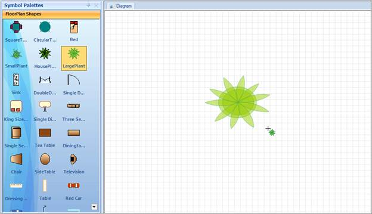

Essential Diagram enables you to draw the selected node by clicking the Diagram page instead of dragging from the Symbol Palette.
Properties
Table 4: Property Table
|
Property |
Description |
Type |
Data Type |
Reference links |
|
Diagram |
Reference to enable drawing the selected node by clicking on the diagram page. |
NA |
Diagram |
NA. |
Enabling Adding Shapes by Clicking Support
You can enable drawing shapes by clicking the diagram page using the Diagram property.
|
[C#] //Palette group view paletteGroupView1.Diagram = diagram1; // Platte group bar paletteGroupBar1.Diagram = diagram1;
|
|
[VB]
'Palette group view paletteGroupView1.Diagram = diagram1; 'Platte group bar paletteGroupBar1.Diagram = diagram1; |

Figure 119: Added Shares
 Note: Click the Diagram page to add the selected
node. Click and drag to get the required size.
Note: Click the Diagram page to add the selected
node. Click and drag to get the required size.
Sample Link
To view a sample:
1. Open the Syncfusion Dashboard.
2. Click the Windows Forms drop-down list and select Run Locally Installed Samples.
3. Navigate to Diagram Samples > Product Showcase > Diagram Builder.